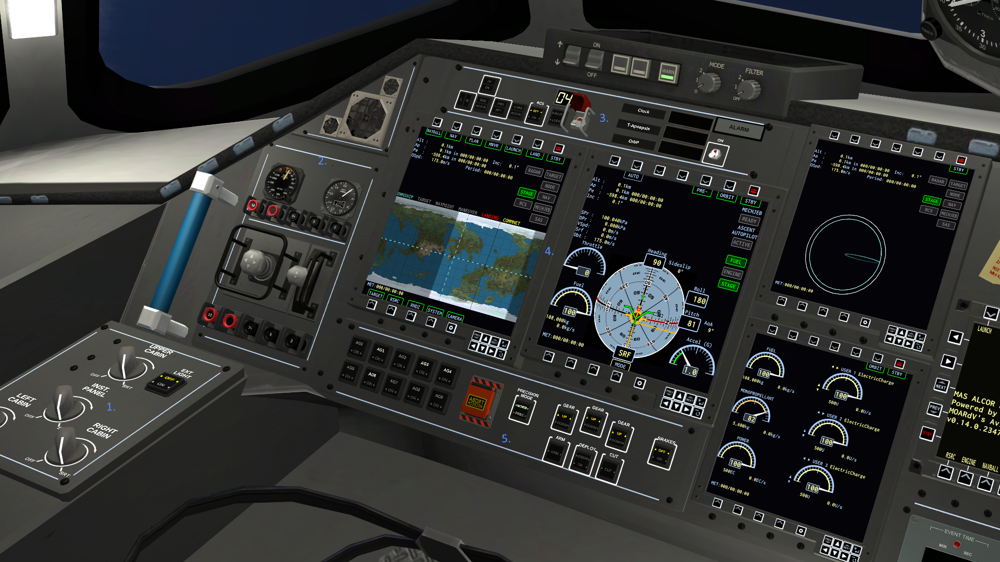
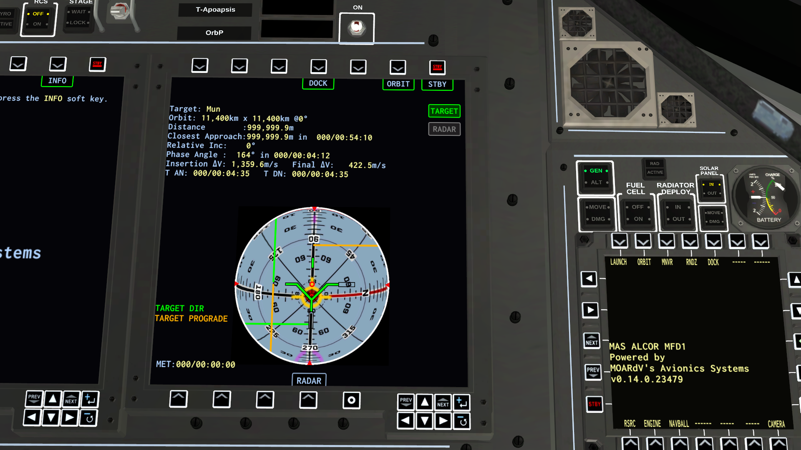

Ultimate Shuttle IVA
Mr. Glass
Flight Manual
Rev v1.0
Author: GTH
CONTENTS
Introduction
Mod Requirements and Known Issues
Vehicle Requirements Recommendations
Flight Instrument Panel Introduction
CMD Panel
Center Panel and Console
PLT Panel
Docking Section
Instrument Addendum
Camera Views
Legalese Stuff
INTRODUCTION
Welcome to the Ultimate Shuttle IVA – Mr. Glass Flight manual. In these pages you find the documentation necessary to implement the IVA's multitude of functions during flight from pre-Launch to landing.
The idea for this IVA, and its companion Full RETRO, was to be the culmination of all the best parts of the best IVA's that have been created thus far for the Mk3 Cockpit in KSP. Not only does this IVA have a full complement of props supplied by ASET (currently both powered by MAS and RPM) to enable a true launch to landing experience purely in IVA, but also several enhancements to the look, the feel, and the usefulness of the IVA.
The IVA can seat 6 Kerbals, and hosts a functioning Docking section (useful not only for docking but also for use of robot arms while in IVA) as well as a decorated MidDeck.
Mr. Glass, as the name implies, is based on the Glass cockpit for the United States Space Shuttle Orbiter circa roughly 2011. A fully digital cockpit, it is the epitome of awesome.
There are some deviations however, and these are strictly limited to whats necessary to support KSP's gameplay or because trying to emulate the real thing would be inefficient. Not only in terms of the reward for accomplishing such an effort, but also in the simple fact that a 100% carbon copy of the original pit would not play well on anyone's computer. There are a LOT of individual controls in the Orbiter's pit. I kept it strictly to the one's necessary for KSP.
Further, while it is possible to replicate the real MFD's and what they did, that would be generally boring except for us Flight sim nerds, and even then. So, I kept MAS' default MFD pages as they look fantastic.
Requirements
&
Known Issues
These are the current requirements for USIVA. These are 100% required. The IVA will not function without these. Links to these requirements are in the release thread.
Latest update of MAS
Latest update of RPM
ASET Props
ASET Avionics
NearFuture Props
These mods are not required, but are recommended to experience the full function of the IVA.
Latest release of MechJEB
Latest release of Kerbal Alarm Clock
Latest release of Chatterer
Below is a list of the currently known issues with this mod as of this release:
CRT Display's On/Off Switch does not animate
Some props may not function correctly or have weird behavior. This should be corrected by the next major release, when all props will be converted to MAS and RPM deprecated.
MechJEB control is slightly wonky. Will be fixed with MAS updates to mechjeb control. Current workaround: Have the MechJeb GUI menu open prior to activating any of the MechJeb modules via IVA.
Currently no in-IVA ability to select a target. Evaluating whether or not to include one.
Not all props in FullRetro are strictly “retro”. Will be updated with conversion to MAS.
Vehicle
Requirements
Recommendations
This IVA presumes some things about your vehicle, namely that your vehicle is styled similarly to the real Space Shuttle orbiter, or is a KSP version of such. While you aren't going to be hampered if your vehicle is not this, you may have a bit of a less immersive experience otherwise.
If you are not familiar with the real Space Shuttle Orbiter, it looks like this:
Naturally, the only required part will be the Mk.3 Cockpit. You won't get the IVA otherwise (unless you're sneaky). I'd also recommend the following:
Wings and their associated elevons
a tail rudder
A drogue parachute.
Landing gear.
A cargo bay – perhaps with a docking apparatus.
An antenna.
Some engines.
If you want to emulate the real Orbiter, there are many options out there, but I recommend using the following:
Cormorant Aeronology – Provides you with a full set of parts to emulate the real Space Shuttle stack near perfectly. Essential mod if you're a Shuttle person.
Shuttle Payload Technologies – While a slightly out of date mod, there's two parts of it that I consider absolutely essential to Shuttles. One, it includes a working Ku-Band antenna similar to the real one (see picture above). And it also includes two variant cargo bay versions that also have radiator panels attached to the bay doors. While not functional as radiators, they look fantastic. Also includes some Spacelab parts which are nice, though they don't work well.
B9 Procedueral Wings – If you're like me and play in FAR or, like me, are simply a stickler for accuracy, I'd recommend using this over the pre-fabricated wings that Cormorant provides. While the prefab wings are great, for me, the ones this mod provides look much better, can be tweaked to be accurate to the real Orbiter, and can also be utilized to create more wackier designs while maintaining the TPS underbelly.
Flight Instrument Panel
(FIP)
Introduction
The Flight Instrument Panel (FIP) is where the vast bulk of the cockpits instruments, readouts, and controls are located. Encompassing the forward end of the pit and extending to the sides of the Commanders (CMD) and Pilots (PLT) seat, this is what you'll be staring at for most of your flight.
Centered in front of the CMD and PLT seats, you'll find a pair of large Multi-Function Displays (MFD's) which can be configured for various readouts and augmented instruments. Also included are a set of controls for the vehicle.
On the Center panel, you'll find a set of 5 MFD's, again, configurable for various readouts and augmented instruments. Also included is a Timer, as well as your Indicator panel.
The Center console is, essentially, your flight computer. It composes of a suite of controls for enacting MechJeb autopilot functions, controlling SAS and Attitude, as well as your communications devices for communications and radio navigation.
Inline with the forward windows, you'll find your HUD's, as well as an analog clock and Impact Speed indicator. Also included is a space for attaching various flight manuals.
Above your head you'll find a series of auxiliary controls. These do nothing mostly.
In the rear of the cockpit you'll find the Docking section and its associated controls, and below that you'll find the Mid-Deck.
In the following pages, you'll find more details on each Panel.
CMD Panel

Lighting Control Panel
Various rotaries for controlling interior lights, and a push-button for exterior lights.
RCS Control and Auxiliary Readout Panel
Contains RCS Hand controller, and two auxiliary gauges. Left is a Radar Altimeter, right is a Mach Meter.
RCS, Staging and Clock controls.
Contains controls for staging and RCS, as well as 3 clock readouts.
Primary MFD's (see Instrument Addendum for use of all MFD's)
Vehicle Control Panel
Various controls for the vehicle, including Abort switch.
Center Panel
Leftside MFD's
Indicator Panel
Indicator lights for various vehicle functions.
Center MFD's.
Timer and Timer Controls.
Right MFD's.
PLT Panel
RCS, Staging, and Clock controls
Primary MFD's.
Vehicle Control Panel
Engine Control Panel
Lighting Controls.
Center Console
Data Entry Pad for MechJEB Flight Computer
1. Numerical numpad for entry of data to flight computer. See Instrument Addendum for instructions on using this panel.
2. MechJEB Flight Module and SAS Controls
Provides direct control of stock SAS as well as several MechJEB Flight modules. See Instrument Addendum for instructions on using this panel.
3.Communications Panel
Provides series of controls and radios for communications controls. See Instrument Addendum for instructions on using this panel.
Docking Section
Leftside MFD
Docking Control Panel
Rightside MFD
Docking Auxiliary Panel
Includes RCS Hand controller, as well as action group and lighting controls. You'll also find two portable timers.
Instrument Addendum
In the following pages you'll find instructions for using the various instruments and MFD's.
MFD2
This MFD is the primary MFD display. This is a very powerful display and its various modes provide a wealth of data and tools for operating your vehicle. The pages and their functions are listed below.
NAV
The NAV page is used, naturally, for Navigation assistance. You can utilize the Arrow keys to cycle between various waypoints. By utilizing the “Select” function, you can set the selected Waypoint as your target. You can remove the selected waypoint, but selecting the “Clear” function.
On the map, the Blue dotted lines represent your vehicles position on Kerbin.The green dotted lines represent your currently selected waypoint.
From this page, you can also access the Orbit page, and the Standby page by selecting their respective functions.
LAUNCH
The Launch page consists of two parts.
The first page is a MechJeb integration page. It displays a map of Kerbin with your current position, and provides a series of basic controls for MechJeb. (NOTE: Is currently buggy due to lack of Roll Control from MAS. Recommended, keep the Mechjeb GUI open to launch while utilizing)
By selecting the ALT function, you can use the functions along the bottom row to change the desired Altitude. The same can be done for the INC. function, for setting Inclination. By selecting the AUTO function, you can switch into the second Launch page.
The second launch page provides you a series of readouts regarding your vehicle's situation during Launch, as well as a NAVBall that functions similarly to the retro FDAI.
The page provides the same AUTO function as the first page, allowing you activate Launch Autopilot for MechJeb. By using the Pre- function, you can switch back into the first Launch page to adjust the autopilots parameters. Utilizing Orbit and Stby functions, you can access those respective pages.
ORBIT

The Orbit page is the primary page where you can access most functions of the MFD. Utilize the top and bottom row functions to access those respective Pages.
On the Orbit page itself, it provides a readout of your vehicles current orbital situation. Also included is another Map, simillar to the NAV function. Along the top of the map, you will see a key indicating what the Dotted line readouts represent.
This page can be used for determining an approximate landing site based on your vehicles ballistic trajectory. When your periapsis has dropped below 0km, the Landing marker lines will activate displaying this landing point. Compare it to the “ownship” marker lines to get an idea of how your trajectory looks.
NAVBALL
The NAVBALL page, as it implies, provides you with a dedicated NAVBALL page. It works similarly to the retro FDAI. By utilizing the SYNC function, the error indicator lines (Yellow) will synchronize themselves to either your selected SAS function, such as Prograde, Target, etc.
PLAN
This page is used to control various MechJEB functions. Note that this page is apparently unfinished.
MANEUVER
Provides a NAVBall page that can be utilized specifically for maneuvers.
LANDING
This page is utilized for landing purposes. Provides a NAVBall, minimap, and several useful readouts.
Also includes integrated parachute and landing gear controls. Dedicated backups for these controls are located above the primary MFD's on the CMD and PLT panels.
TARGET
This page is used for selecting a Target and displaying data on the selected target. Cannot recommend using the RADAR function at this time.
RESOURCE
This page, naturally, is used to display various readouts on vehicle resources. The 3 left readouts are defaulted and locked to Fuel, Monopropellant, and Power. The 3 right readouts can be configured per user preference. Utilize the Arrow keys to select a readout, and then change its resource.
Rendezvous

This page is used for Rendezvous purposes. Provides a NavBall, as well as various readouts for your target. By utilizing the DOCK function, you can switch into the Docking page.
DOCKING
The docking page is for docking. Duh. Provides a NavBall as well as an X-Pointer display. Provides controls for activating RCS and Precision control. X-pointer display works much like the retro X-pointer, also available in the docking section. See the X-Pointer addendum for more info on the use of this instrument.
System
This page is currently blank.
Camera
This page is obviously a camera display. Utilize the arrow left and right keys to select your camera.
“TEST”
The “test” page is in actuality a visualization of your vehicles Orbital trajectory.
MFD1
This is the secondary MFD. While a little older in style, it does provide other options for monitoring various vehicle states. Most pages are essentially the same as MFD2.
X-Pointer
The X-Pointer instrument is used to provide lateral velocities or displacements. When configured for landing, the X-Pointer can be used to nullify sideways movement, ensuring a vertical landing. When used for rendezvous, the X-Pointer can be used to place a target directly in front of the vessel, and to cancel any sideways drift relative to the target.
The instrument consists of the X-Pointer display, the MODE selector switch, the SCALE selector switch, and the X-PTR ERR error indicator.
The MODE selector switch controls which mode the X-Pointer is operating in.
OFF: The X-Pointer is powered down. The backlight is switched off, and the needles return to zero.
LDG: The X-Pointer is in landing mode. It provides the lateral velocity of the craft in m/s (as adjusted by the SCALE selector).
D-DIST: The X-Pointer is in docking distance mode. It provides the lateral displacement of the craft from its target in meters (as adjusted by the SCALE selector).
D-VEL: The X-Pointer is in docking velocity mode. It provides the lateral velocities of the craft relative to its target in meters/second (as adjusted by the SCALE selector).
When used with the ARRT, this instrument can be used to guide a craft to a stable landing (no lateral velocity), or to rendezvous with a target.
The SCALE selector switch changes the units being displayed by the X-Pointer. It can be switched to x1/10, x1, or x10. When the X-Pointer is active, the selected scale is displayed below the main window.
This indicator is enabled when the X-Pointer is configured for target for docking while there are no valid targets being tracked.
MechJEB Flight Module Controls
The MechJEB Flight Module control panel (the bulk of the Center console), is a very powerful tool for controlling MechJeb.
The first section of the console, called the Data Entry Panel, containing the 2 Numerical Keypads, is used for changing key functions of the MechJeb mode you have selected.
To use this, first turn on the Data Entry panel utilizing one of the switches next to the readout. From here, select your desired MechJeb mode from the second section.
Then, use the “Read/Write” button to switch from Read to Write. Enter in your desired change, and then use the “Exec” button to commit the change. It is recommended when complete with the changes to turn off the Data Entry panel.
The next section of the console contains the SAS/Attitude controls, as well as the MechJEB mode controls. Each mode controls a different MechJEB Autopilot, and theres several optiosn for chaging the modes of these autopilots.
Camera Views
The IVA also includes several clickable camera views that you can utilize.
There are four camera views for viewing out of the forward windows. Click on the windows to access them. (Note, the two middle left and right windows do not include views at this time)
The docking section has a camera view, which can be accessed by turning your selected Kerbal's view towards the center aisle, and then clicking towards the roof of the cockpit.
The Mid-Deck has two views currently. They are most easily accessed while in the Docking view. Look to your left or right, and click on the back wall of the IVA towards the middle of the wall.
Finally, there is one more camera view available, accessible by changing your view similar to accessing the Docking section, but rather than clicking towards the roof of the IVA, instead click towards the floor.
This view is nicknamed “Glory”, and for good reason.
Legalise

This
work is licensed under a Creative
Commons Attribution-NonCommercial-NoDerivatives 4.0 International
License.
Under no circumstance is this mod, or any derivative of it, authorized to be released on CKAN or any other mod management tool without my express written consent.